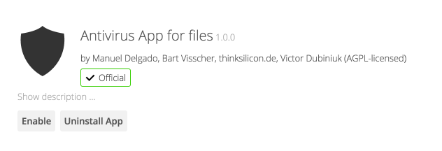
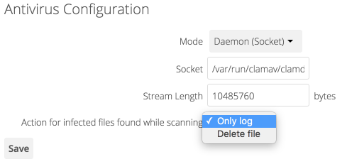

Configuring the ClamAV Antivirus Scanner¶
You can configure your Nextcloud server to automatically run a virus scan on newly-uploaded files with the Antivirus App for Files. The Antivirus App for Files integrates the open source anti-virus engine ClamAV with Nextcloud. ClamAV detects all forms of malware including Trojan horses, viruses, and worms, and it operates on all major file types including Windows, Linux, and Mac files, compressed files, executables, image files, Flash, PDF, and many others. ClamAV’s Freshclam daemon automatically updates its malware signature database at scheduled intervals.
ClamAV runs on Linux and any Unix-type operating system, and Microsoft Windows. However, it has only been tested with Nextcloud on Linux, so these instructions are for Linux systems. You must first install ClamAV, and then install and configure the Antivirus App for Files on Nextcloud.
Installing ClamAV¶
As always, the various Linux distributions manage installing and configuring ClamAV in different ways.
- Debian, Ubuntu, Linux Mint
On Debian and Ubuntu systems, and their many variants, install ClamAV with these commands:
apt-get install clamav clamav-daemon
The installer automatically creates default configuration files and launches the
clamd and freshclam daemons. You don’t have to do anything more, though
it’s a good idea to review the ClamAV documentation and your settings in
/etc/clamav/. Enable verbose logging in both clamd.conf and
freshclam.conf until you get any kinks worked out.
- Red Hat 7, CentOS 7
On Red Hat 7 and related systems you must install the Extra Packages for Enterprise Linux (EPEL) repository, and then install ClamAV:
yum install epel-release yum install clamav clamav-scanner clamav-scanner-systemd clamav-server clamav-server-systemd clamav-update
This installs two configuration files: /etc/freshclam.conf and
/etc/clamd.d/scan.conf. You must edit both of these before you can run
ClamAV. Both files are well-commented, and man clamd.conf and man
freshclam.conf explain all the options. Refer to /etc/passwd and
/etc/group when you need to verify the ClamAV user and group.
First edit /etc/freshclam.conf and configure your options.
freshclam updates your malware database, so you want it to run frequently to
get updated malware signatures. Run it manually post-installation to download
your first set of malware signatures:
freshclam
The EPEL packages do not include an init file for freshclam, so the quick
and easy way to set it up for regular checks is with a cron job. This example
runs it every hour at 47 minutes past the hour:
# m h dom mon dow command
47 * * * * /usr/bin/freshclam --quiet
Please avoid any multiples of 10, because those are when the ClamAV servers are hit the hardest for updates.
Next, edit /etc/clamd.d/scan.conf. When you’re finished you must enable
the clamd service file and start clamd:
systemctl enable clamd@scan.service
systemctl start clamd@scan.service
That should take care of everything. Enable verbose logging in scan.conf
and freshclam.conf until it is running the way you want.
Enabling the Antivirus App for Files¶
Place the files_antivirus app into the apps directory of your Nextcloud
server. Then the app shows up on the Nextcloud Apps page where it simply can be
enabled.

Configuring ClamAV on Nextcloud¶
Next, go to your Nextcloud Admin page and set your Nextcloud logging level to Everything.

Now find your Antivirus Configuration panel on your Admin page.

ClamAV runs in one of three modes:
- Daemon (Socket): ClamAV is running on the same server as Nextcloud. The ClamAV
daemon,
clamd, runs in the background. When there is no activityclamdplaces a minimal load on your system. If your users upload large volumes of files you will see high CPU usage. - Daemon: ClamAV is running on a different server. This is a good option for Nextcloud servers with high volumes of file uploads.
- Executable: ClamAV is running on the same server as Nextcloud, and the
clamscancommand is started and then stopped with each file upload.clamscanis slow and not always reliable for on-demand usage; it is better to use one of the daemon modes.
- Daemon (Socket)
Nextcloud should detect your
clamdsocket and fill in theSocketfield. This is theLocalSocketoption inclamd.conf. You can runnetstatto verify:netstat -a|grep clam unix 2 [ ACC ] STREAM LISTENING 15857 /var/run/clamav/clamd.ctl

The
Stream Lengthvalue sets the number of bytes read in one pass. 10485760 bytes, or ten megabytes, is the default. This value should be no larger than the PHPmemory_limitsettings, or physical memory ifmemory_limitis set to -1 (no limit).Action for infected files found while scanninggives you the choice of logging any alerts without deleting the files, or immediately deleting infected files.- Daemon
For the Daemon option you need the hostname or IP address of the remote server running ClamAV, and the server’s port number.

- Executable
The Executable option requires the path to
clamscan, which is the interactive ClamAV scanning command. Nextcloud should find it automatically.
When you are satisfied with how ClamAV is operating, you might want to go back and change all of your logging to less verbose levels.